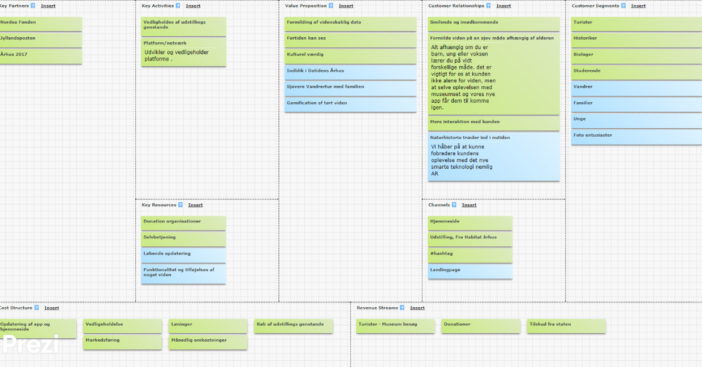

Projektpræsentation
I 2017 er Aarhus sammen med Region Midtjyllands 18 andre kommuner Europæisk Kulturhovedstab. Vi skulle finde en kunde i forbindelse Kulturby 2017, som tilbyder en service, oplevelse eller produkt, hvor vi skulle have kontakt med målgruppen og opnå indsigt i brugernes behov gennem research.
Vi skulle udvikle en webløsning med relevant indhold, hvor vi skulle kunne argumentere for det værdiskabende. Vi skulle bruge Google Ventures 5 dages procesmodel Sprint.
Arbejdsproces
I starten af projektet skulle vi ud på feltarbejde, hvor vi skulle ud og finde os en kunde. Det blev i Aarhus centrum, hvor efter noget tids søgning blev kunden Habitat Aarhus. Efter at have fundet vores kunde, så var næste skridt at lære kunden og kundens målgrupper at kende – det gjorde vi ved at foretage os en online research omkring Habitat Aarhus. Efter researchen, udarbejdede vi nogle brugerprofiler af vores interviewpersoner for at holde på vores observationer. Efter at vi havde brugerprofilerne klar, så skulle indsamle resten af vores data og sætte dem i overskrifter.

Det næste i processen var at udarbejde en Business Model Canvas for at se, hvordan vi som multimediedesigner kan skabe værdi for en virksomhed og i vores tilfælde var det jo, hvordan vi kunne skabe værdi for Habitat Aarhus. Vi brugte modellen til at skabe os et overblik over Habitat Aarhus’s målgrupper, deres kunderelationer, hvilke nøgleaktiviteter og partnere de har, og hvad de har indtægter og udgifter.
De grønne klodser var for at kortlægge omkring, hvad Habitat Aarhus havde i forvejen, og vi prøvede at være så konkret og detaljeret som muligt. Når det kom til ideer og udviklingsmuligheder for Habitat Aarhus, så fyldte vi modellen med blå klodser for at nemmere at adskille de to dele.
Efter at have være på feltarbejdet, udført brugerprofiler og har anvendt BMC på vores kunde, så var det endelig til at starte selve projektet ved hjælp af Sprint metoden.
Sprint
På første dag af sprint projektet, handlede om at finde frem til den specifikke og rette målgrupper. Det gjorde vi ved at anvende de brugerprofiler, som vi foretog os på feltarbejdet. Vi tegnede en map, hvor målgruppen var skrevet på venstreside og slutmålet for produktet på højre side; hvor vi i midten skulle beskrive de steps målgruppen skulle tage fra behov til løsning.
Vi omskriv de udfordringer ude fra vores research til muligheder ved at benytte os af ”how might we”. Vi skulle i gruppen vælge de bedste udfordringer, hvor vi hver i sær havde to stemmer. Vi i gruppen blev enige om at målgruppen var de foto/naturinteresserede samt børnefamilier.
Vi blev enige om at udvikle en landingpage og app, hvor vores målgruppen kunnne opleve Aarhus for 1000 år siden. En af de grunde til at vi netop valgte den løsning var, fordi at vi gerne vil give målgrupperne en alternativ og spændende oplevelse ved anvendelse af AR-teknologien.
Vi søgte derefter inspirationer for lignende landingpage-sites og apps for at finde vores design til vores landingpage, og de funktioner vores apps skulle have.
Anden dag af projektet, gik vi i gruppen hver til sit for at finde en løsningsforslag via. skitsering. Da vi alle gruppen havde kommet med hver vores løsning til en wireframe, var vi klar til næstes dags runde. Det bestod på at evaluere hinandens forskellige løsninger samt at finde den bedste løsning og skabe en detaljeret storyboard over den løsning, vi valgte. Vi anvendte Illustrator for at få et bedre overblik over, hvordan vores landing page kunne se ud.
1.runde
2. runde
3. runde
Wireframes
De sidste to dage af sprint projektet, handlede for os at udvikle vores prototype på vores løsningsforslag og afprøve den på målgruppen, men i dette tilfælde testede vi prototypen på vores medstuderende. Vi spurgte ind ift. designet, om den var brugervenligt og enkelt, var den til at finde rundt og om at informationer var lige til og forståeligt. Målgruppen svar var, at prototypen var lækket designet og informationerne var forståeligt. De havde lyst til at besøge stedet på baggrund af prototypen også, at man kunne opleve det forhistoriske for 1000 år siden. Det de dog savnede var, at der ikke var informationer ift. hvem der sponserede Habitat Aarhus – det stod ikke klart og tydeligt. Til at skabe landing pagen, anvendte vi HTML5 og CSS3. Tidsmæssigt var vi presset, så vi fik ikke implementeret de feedbacks, vi fik fra vores medstuderende.
Reflektion
Projektet har lært mig værdien i at bruge Sprintmodellen. Gennem processen har jeg lært de forskellige stadier at kende og har fået en bedre fornemmelse for dem ved at bruge den i praksis. En af de mest værdifulde læring, jeg har fået mig med er nemlig at få indsigt i en målgruppe for overhovedet at kunne gå i gang med et projekt.
Man vil aldrig kunne udvikle og skabe et produkt/løsning på noget uden data fra den målgruppe, man nu har undersøgt, interviewet eller observeret.
Projektet var fyldt med udfordringer, som vi stødte på vejen i min gruppe. Nok den største udfordring vi mødte var allerede tidligt i processen, hvor vi låste os fast på en ide, hvilket resulterede i, at vi sad og arbejdede på den ene ide hele vejen igennem i stedet for at afprøve andre ideer, hvilket er meningen med sprint-modellen. Derfor endte vi også med at ikke udnytte tiden maksimalt i de forskellige stadier som planlagt.
Landingpage Habitat Aarhus